클로드는 어떻게 영상을 만들까요
이 영상은 Claude Code와 자바스크립트만으로 모션 그래픽 영상을 만드는 방법을 다뤄요. Remotion이나 After Effects 같은 별도 도구도, AI(Artificial Intelligence) 영상 생성기도 쓰지 않아요. 아래는 영상 첫머리에 나오는 결과물 중 하나예요. 'EASE', 'SNAP', 'STRETCH', 'OVERSHOOT' 같은 움직임 용어가 글자로 튀어나오고, 오른쪽에는 각 움직임의 곡선 그래프가 붙어 있어요.
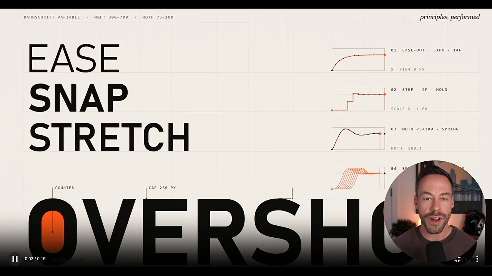
영상은 시간의 함수예요
발표자는 Claude에게 이 원리를 설명하는 영상을 3Blue1Brown 스타일로 만들게 했어요. 그 영상의 첫 장면이 핵심을 한 줄로 보여 줘요. 왼쪽 초록 글씨 frame(t) = 오른쪽에 원 위를 도는 점과 sin θ 곡선이 그려진 그림이 있어요. 시간 t를 넣으면 그림 한 장이 나온다는 뜻이에요.
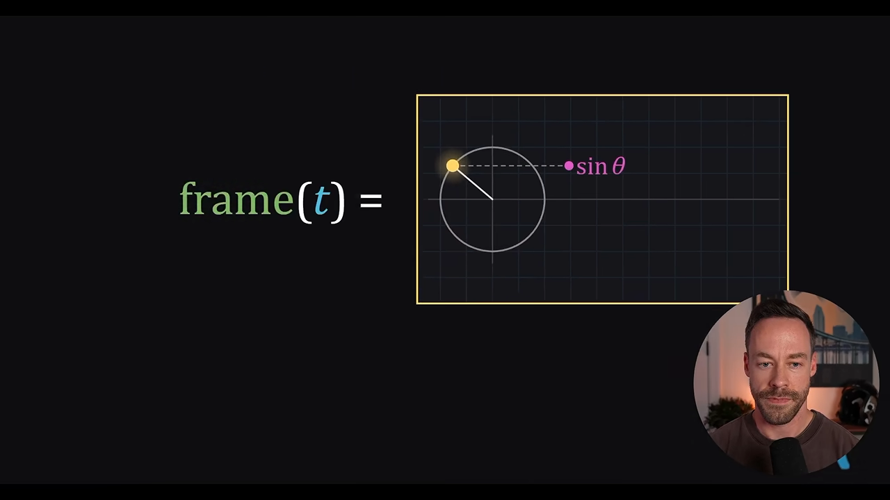
같은 t를 넣으면 언제나 같은 그림이 나와요. 아래 화면은 frame(5.50)을 두 번 그려 나란히 놓은 거예요. 두 그림은 점의 위치까지 똑같아요. 그래서 어느 프레임이든 따로 다시 그리거나 하나만 꺼내 확인할 수 있어요.
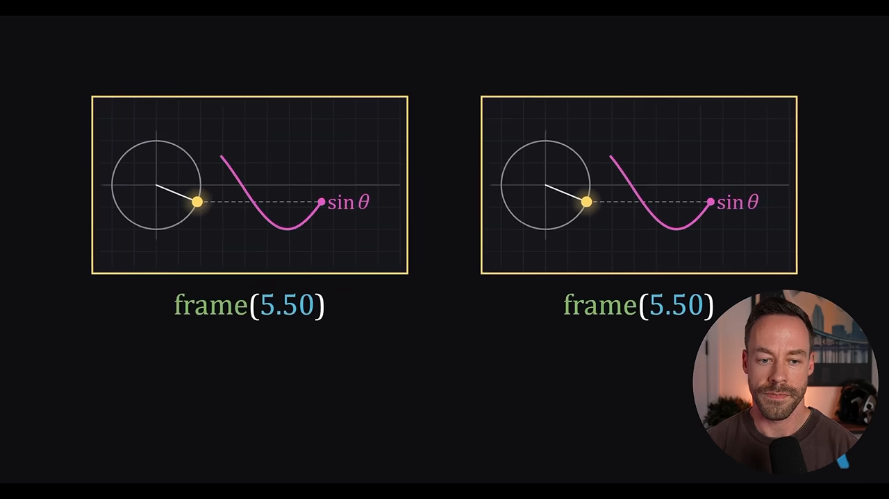
1초에 이런 그림을 60장 뽑아 순서대로 놓으면 1초짜리 영상이 돼요. 발표자가 화이트보드에 그린 아래 그림에서, 아래쪽 눈금 막대가 시간축이고 위쪽 칸들이 0.25초 간격으로 뽑은 프레임이에요. 왼쪽 아래 60 samples per second가 바로 초당 60장이라는 뜻이에요.
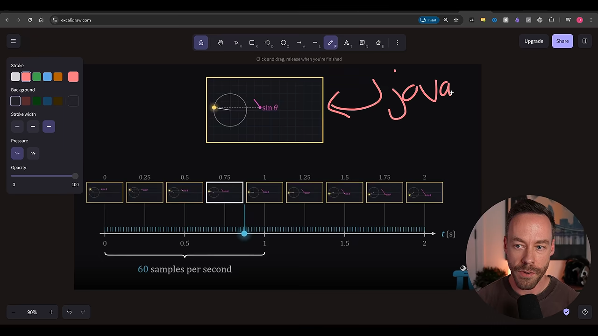
그리고, 확인하고, 이어 붙여요
그림을 그리는 곳은 헤드리스 브라우저예요. Playwright를 쓰면 Claude Code가 자기만의 크롬을 띄워 놓고 프레임을 그리는 셈이에요. 아래 그림에서 왼쪽 코드 상자(function frame(t))가 브라우저로 들어가고, 프레임 240장(frames = 240)이 나온 뒤, FFmpeg를 거쳐 오른쪽 재생 화면이 돼요. 아래쪽 물결선 sound(t)는 소리도 시간의 함수로 만들 수 있다는 뜻이에요.
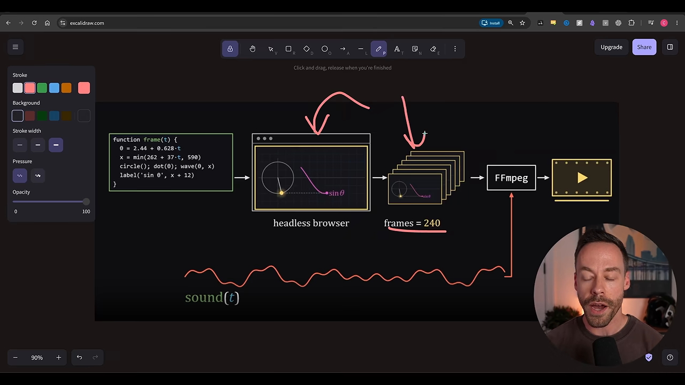
Claude는 영상을 재생해서 볼 수는 없어요. 대신 프레임 이미지는 볼 수 있어요. 아래 화면처럼 여러 시점(t = 0, 1, 2 … 18)의 프레임을 한 장에 모아 보고, 잘못된 곳을 찾아 함수를 고쳐요. 오른쪽 아래 t = 15, t = 18 칸은 비어 있고 주황 표시가 붙어 있어요. 오른쪽 위에는 붉은 글씨로 label cut off(라벨 잘림)라는 메모가 있어요. 이게 Claude가 스스로 찾아낸 문제예요.
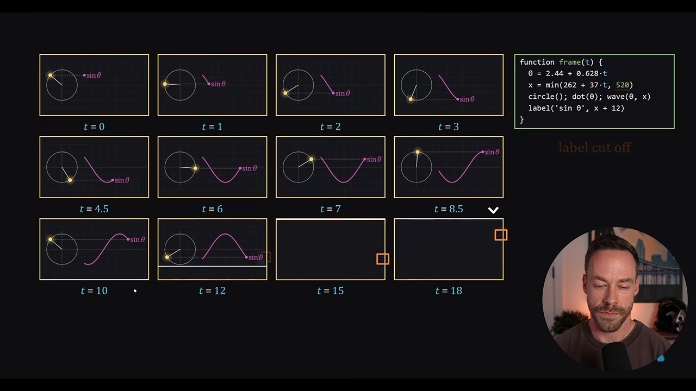
Claude가, 혹은 사람이 괜찮다고 하면 FFmpeg가 프레임을 이어 붙여 MP4로 내보내요. 소리는 코드로 만들 수도 있고, 발표자의 설명 영상처럼 ElevenLabs로 만든 내레이션을 쓸 수도 있어요. 발표자는 대본을 먼저 쓰고 그래픽을 거기에 맞췄어요. 외부 도구에 따로 돈을 내지 않으니 사실상 공짜라는 게 발표자의 강조점이에요.
So, Claude never made a video. It wrote what the video is, a function of time.
그러니까 Claude는 영상을 만든 적이 없어요. 영상이 무엇인지를, 시간의 함수로 적었을 뿐이에요.
— 영상 01:09
네 단계로 나눠 볼게요
발표자는 이 과정을 네 단계로 나눠 설명해요. 아래 그림의 번호가 이 문서의 다음 네 섹션과 같아요.
1단계: 프롬프트와 스토리보드
발표자는 아주 단순한 프롬프트로 시작해요. 아래 화면 맨 위 말풍선이 그 프롬프트예요. "15초짜리 역동적인 모션 그래픽 영상을 만들어, 이력서에 붙일 쇼릴처럼, 스킬은 쓰지 말고." 오른쪽 아래 Opus 5.5 · Low 표시가 노력 수준이에요. Claude는 15초, 1080p 60fps, 128 BPM(Beats Per Minute) 사운드트랙까지 직접 만들었다고 답했어요.
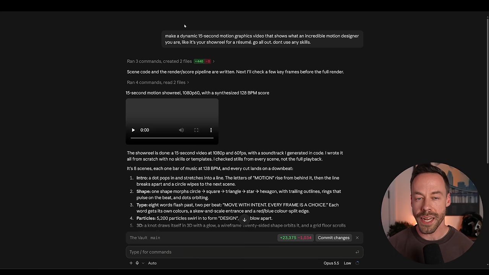
노력 수준보다 프롬프트예요
같은 프롬프트를 노력 수준만 바꿔 세 번 돌렸어요.
| 노력 수준 | 걸린 시간 | 발표자 평가 |
|---|---|---|
| Low | 20분쯤 | 꽤 잘했어요 |
| High | 30분쯤 | 괜찮았어요 |
| Ultra code | 8시간 | 가장 좋았어요 |
Ultra code가 가장 좋았지만, 걸린 시간을 생각하면 Low와 High도 충분했어요. 발표자의 결론은 결과가 아쉬울 때 원인은 대개 노력 수준이 아니라 프롬프트라는 거예요. 자바스크립트로 영상을 만드는 Claude의 기본 실력이 이미 꽤 높다는 뜻이기도 해요. 아래는 Low 버전의 한 장면이에요. 터미널 문구 render showreel --fps 60 --frames 900과 900 frames · 15.0 s · 128 bpm을 화면 연출로 넣었어요.
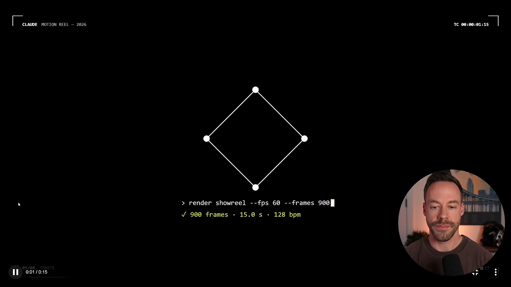
코딩 전에 스토리보드부터
결과를 가장 크게 바꾸는 한 가지는 스토리보드를 먼저 달라고 하는 거예요. 영상 전체를 한 번에 만들게 하지 말고, 장면(비트)마다 대표 프레임을 먼저 받아 보는 거예요. 아래가 1장에서 본 설명 영상의 스토리보드예요. 맨 위에 46.45s · 1920×1080 · 120 BPM · 7 beats라고 적혀 있고, 일곱 칸마다 시작 시각, 장면 제목, 그 장면의 소리가 붙어 있어요. 이를테면 6번 칸은 "38.0s · look, find, fix"이고 소리는 "잘못된 프레임에서 낮은 버즈음"이에요.
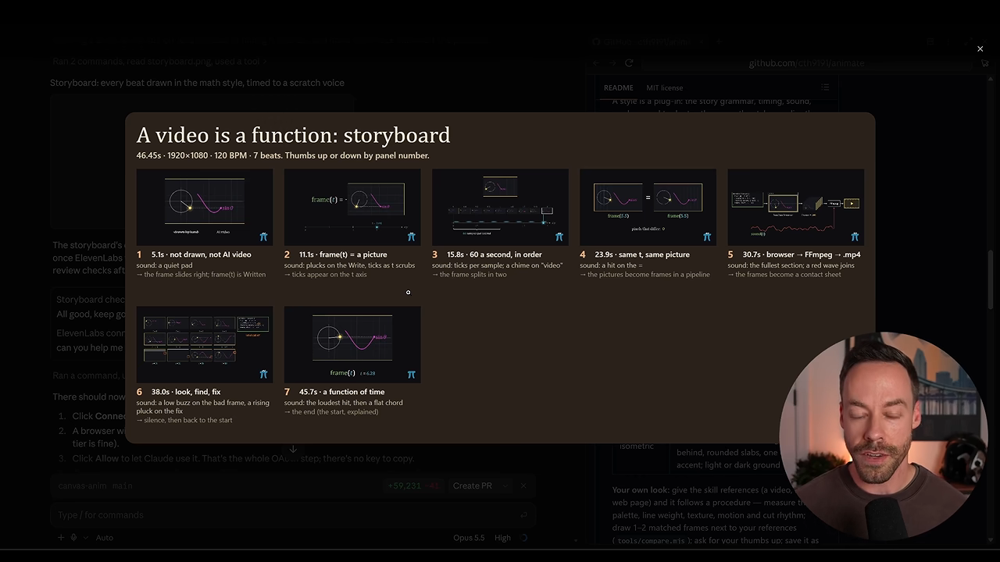
이게 중요한 이유는 렌더링이 오래 걸리기 때문이에요. 2단계의 검토 루프까지 붙이면 더 길어져요. 20분 기다려 받은 영상이 마음에 안 들면 다시 시키고, 또 기다리고… 이렇게 한두 시간, 길게는 세 시간을 쓰게 돼요. 스토리보드 단계에서 방향을 고치면 이 반복을 피할 수 있어요.
2단계: 프롬프트 구조와 검토 루프
2단계에서는 프롬프트에 무엇을 적어야 하는지와, 바깥에서 가져와야 하는 도구를 정리해요. 발표자가 화이트보드에 붙여 둔 프롬프트는 네 줄이에요. 번호가 붙은 색 칸이 각 요소이고, 오른쪽 설명이 그 칸이 하는 일이에요. 맨 아래 점선 상자 "Claude figures out the rest"는 나머지(renderFrame(t), 음악, 프레임별 렌더링, 인코딩)는 Claude가 알아서 한다는 뜻이에요.
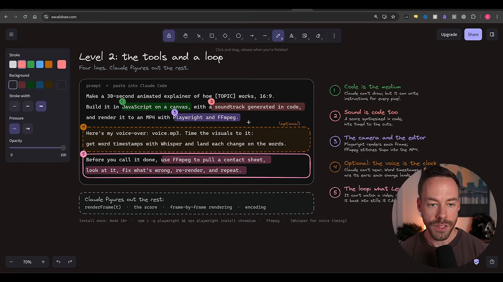
화면 속 프롬프트를 번호 순서대로 옮기면 이래요.
| 번호 | 프롬프트에 적는 것 | 왜 필요한가요 |
|---|---|---|
| ① | 30초짜리 [주제] 애니메이션 설명 영상, 16:9, 자바스크립트 캔버스로 | 길이·종류·화면 비율을 정해요. 세로형 쇼츠라면 비율을 바꿔요. Claude는 그림을 못 그리지만 픽셀마다 지시를 쓸 수는 있어요 |
| ② | 사운드트랙도 코드로 생성 | 음악도 코드로 합성하고, 장면 전환에 박자를 맞춰요. 내 음악 파일을 줘도 돼요 |
| ③ | Playwright와 FFmpeg로 MP4 렌더링 | Playwright가 프레임을 그려 확인하게 하고, FFmpeg가 이어 붙여요 |
| ④ (선택) | 내 voice.mp3에 화면을 맞추고, Whisper로 단어 타임스탬프를 뽑아 단어마다 장면을 바꿔 | Claude는 소리를 못 들어요. 단어 타임스탬프가 귀 역할을 해요 |
| ⑤ | 끝내기 전에 FFmpeg로 컨택트 시트를 뽑아 보고, 고치고, 다시 렌더링하기를 반복 | 영상을 볼 수 없으니 스틸 이미지로 바꿔 확인하는 루프예요 |
문구를 그대로 쓸 필요는 없어요. 다만 "끝내기 전에 Playwright와 FFmpeg로 결과를 확인하고 맞춰라"라는 뜻은 꼭 들어가야 해요. 발표자는 Opus 5.5와 Fable 5.1 정도면 말하지 않아도 대개 알아서 한다고 해요. 그래도 원리를 알아야 원하는 대로 안 될 때 무엇을 요청할지 알 수 있어요.
검토 루프는 이렇게 돌아요
⑤번 줄이 만드는 루프를 그림으로 옮기면 이래요. Claude는 렌더링한 프레임을 한 장에 모아 보고, 문제가 있으면 함수를 고쳐 다시 렌더링해요. 사람이 승인하거나 Claude가 만족할 때까지 이걸 반복해요.
flowchart LR
A["frame(t) 코드 작성"] --> B["Playwright로 프레임 렌더링"]
B --> C["FFmpeg로 컨택트 시트"]
C --> D{"이상한 곳이 있나요?"}
D -- "있어요" --> E["함수 고치기"] --> B
D -- "없어요" --> F["FFmpeg로 MP4 내보내기"]
소리와 화면, 무엇을 먼저 만들까요
정해야 할 게 하나 더 있어요. 화면을 먼저 만들고 소리를 나중에 입힐지, 내레이션이나 음악을 먼저 주고 화면을 거기 맞출지예요. 발표자는 1장의 설명 영상을 만들 때 내레이션 음성을 먼저 주고, Claude가 거꾸로 화면을 맞추게 했어요. 내레이션은 ElevenLabs가 가장 좋다고 하는데, 월 5달러쯤인 구독이면 충분하고 최근 MCP(Model Context Protocol)도 내놨다고 해요. 오픈소스 음성 도구도 많다고 덧붙였어요.
3단계: 레퍼런스로 스타일 빌리기
3단계는 프롬프트에 레퍼런스를 붙이는 거예요. 이미지를 주고 "이 이미지를 그대로 넣어 줘"나 "이 분위기를 따라 해 줘"라고 할 수 있어요. 영상을 주고 "이 구도를 참고해서 내 내용으로 만들어 줘"라고 할 수도 있어요.
발표자의 예시가 아래 화면이에요. 왼쪽이 레퍼런스로 준 영상이고, Opus 5.5와 Remotion으로 만든 화폐의 역사 영상이에요. 맨 위 '9000 BC', 저울 그림, 'BARTER'(물물교환)가 보여요. 오른쪽은 자바스크립트로 다시 만든 전기의 역사 영상이에요. '1844', 전신기 그림, "A MESSAGE BECAME ELECTRIC."(메시지가 전기가 되었다)가 적혀 있어요.
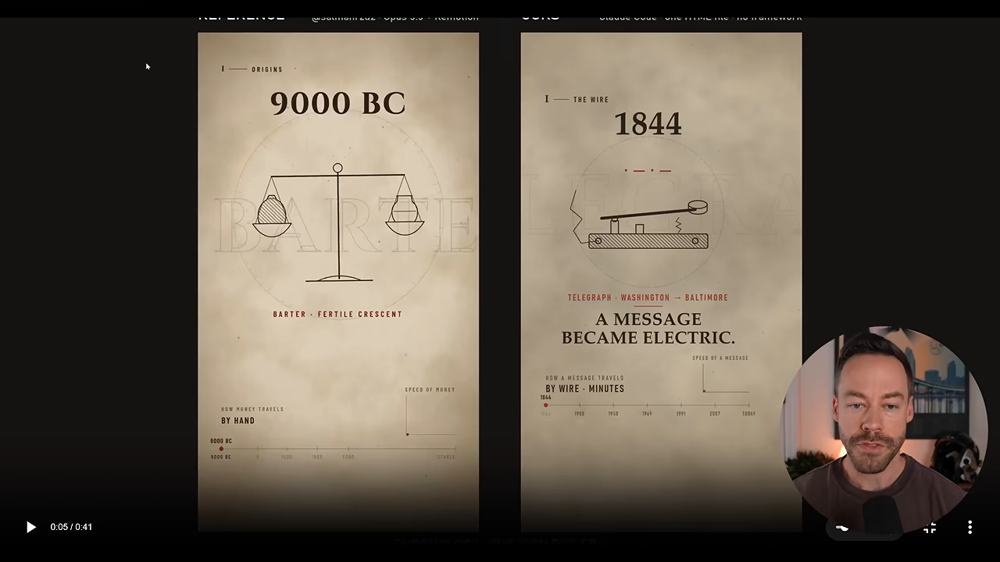
영상이 끝으로 갈수록 이 짝이 계속 이어져요. 아래 장면에서 왼쪽은 지구본 위에 별자리 같은 점을, 오른쪽은 'TODAY'와 함께 같은 지구본 위에 빛이 뻗는 선을 그렸어요. "16 HOURS IN 1858. NOW, UNDER A TENTH OF A SECOND."처럼 숫자로 대비하는 문장 구조도 똑같이 가져왔어요.
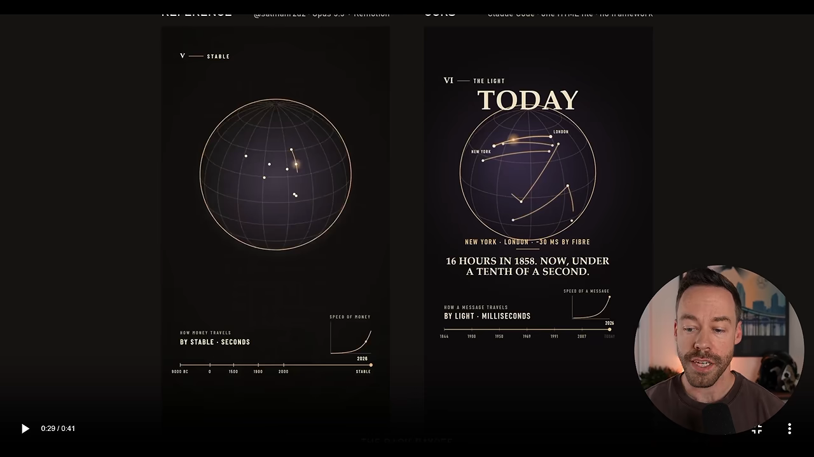
영감은 어디서 찾나요
발표자는 두 곳을 꼽았어요. 하나는 skillry.dev예요. 화면 가운데 큰 제목이 "Viral Opus 5.5 videos, with their prompts."이고, 그 아래 "475 videos, each with its prompt"라는 배지와 Motion graphics, Explainers, 3D scenes, Games 같은 분류 버튼이 있어요. 영상마다 만든 사람이 쓴 프롬프트를 함께 보여 줘서 레퍼런스를 고르기 좋아요. 유료 사이트지만 무료로도 꽤 많이 볼 수 있다고 해요.
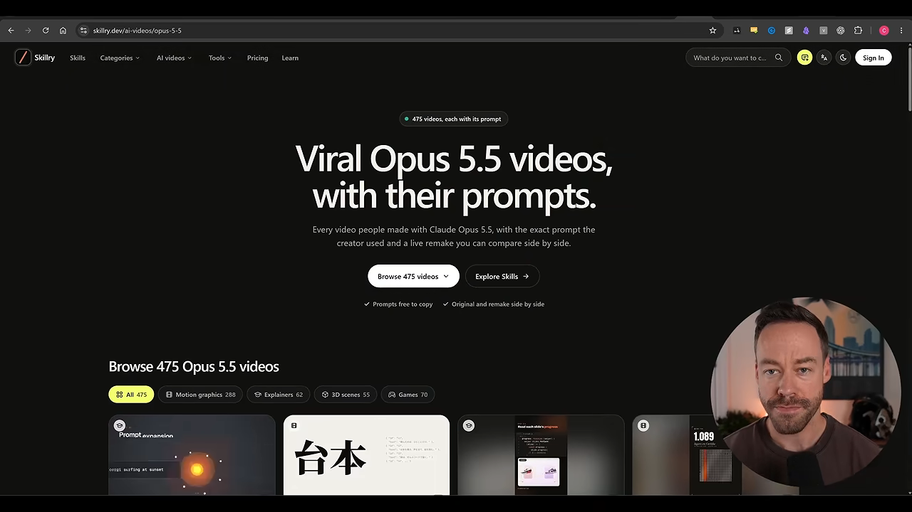
다른 하나는 X(트위터)예요. 발표자는 Kevin Ngo를 이런 영상을 가장 잘 만드는 사람으로 꼽았어요. 화면의 게시물은 "Claude Opus 5.5 drew self-portraits using JavaScript and composed the piano score."라는 글과 함께, 종이 조각 수십 장이 사람 실루엣을 이루는 영상이에요.
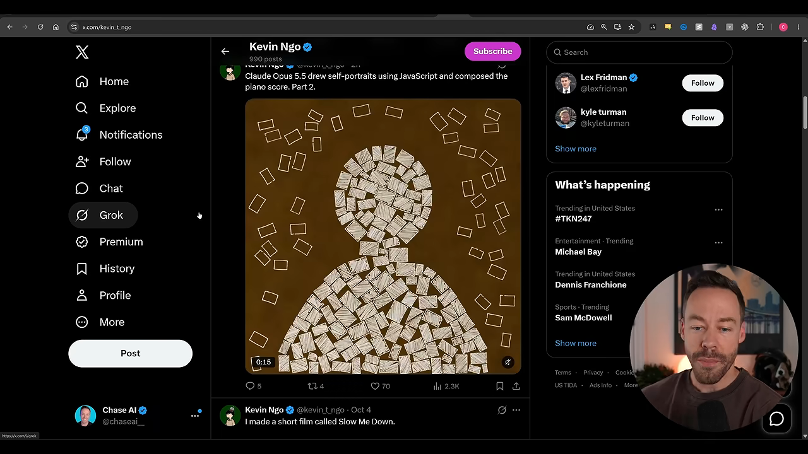
4단계: 스킬로 굳히기
마지막 단계는 지금까지의 과정을 스킬로 굳혀서 Claude가 매번 같은 절차를 밟게 하는 거예요. 발표자가 공개한 스킬은 GitHub의 cth9191/animate에 있어요. 아래 README 화면에 기본 스타일 일곱 가지가 번호와 함께 나와요. 1 cut-paper, 2 crosshatch, 3 riso, 4 sketchbook, 5 math, 6 pixel, 7 isometric이고, 8번 칸은 물음표가 그려진 custom이에요.
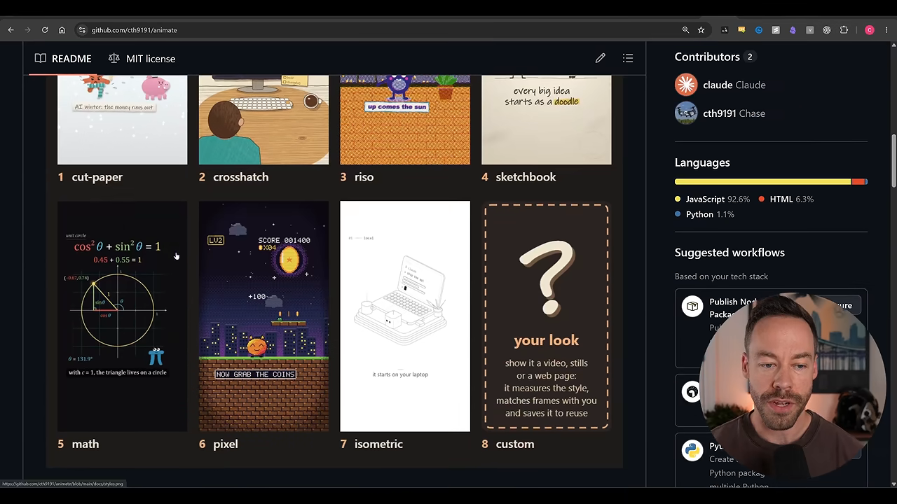
스킬이 밟는 순서
스킬은 사용자를 이끌면서 단계를 하나씩 밟아요. README의 "How it works" 표는 세 칸으로 되어 있어요. 단계(step), 화면에 보이는 것(what you see), 내가 정할 것(you decide)이에요. 문장 위에 "시간을 들여 애니메이션을 만들기 전에, 값싼 것 세 가지를 먼저 승인받는다"고 적혀 있어요.
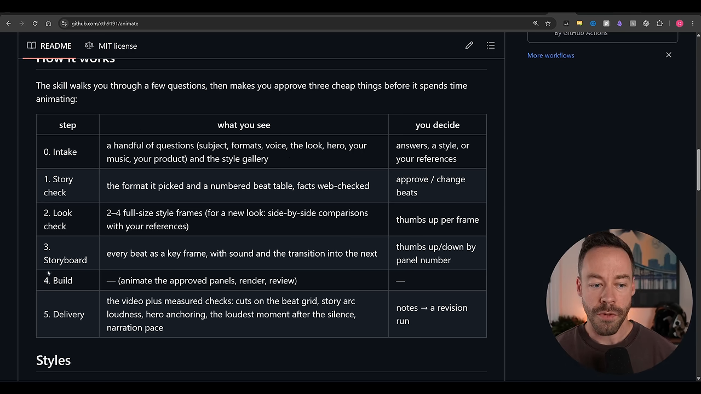
| 단계 | 보이는 것 | 내가 정할 것 |
|---|---|---|
| 0. Intake | 질문 몇 개(주제, 형식, 목소리, 스타일, 주인공, 음악, 제품)와 스타일 갤러리 | 답, 스타일, 또는 레퍼런스 |
| 1. Story check | 고른 형식과 번호 매긴 장면 표, 웹으로 확인한 사실 | 장면 승인 또는 수정 |
| 2. Look check | 스타일 프레임 2~4장(새 스타일이면 레퍼런스와 나란히 비교) | 프레임마다 좋다·싫다 |
| 3. Storyboard | 장면마다 키 프레임, 소리, 다음 장면으로의 전환 | 칸 번호로 좋다·싫다 |
| 4. Build | 승인된 장면을 애니메이션으로 만들고 렌더링·검토 | 없음 |
| 5. Delivery | 영상과 측정한 점검 결과(박자에 맞춘 컷, 음량 흐름, 내레이션 속도 등) | 메모를 주면 수정 실행 |
발표자는 말로 이 순서를 간단히 설명했어요. 처음에 주제, 형식, 오디오와 목소리, 처음부터 끝까지 등장할 주인공 캐릭터가 필요한지를 물어요. 그다음 이야기 구성을 잡고, 1단계에서 말한 스토리보드로 장면을 미리 확인한 뒤에야 코드를 짜서 전달해요. 그동안 2단계의 Playwright·FFmpeg 검토 루프는 자동으로 돌아요. 사용자는 질문에 답하고 원하는 레퍼런스만 주면 돼요.
설치
설치는 플러그인으로 하거나, 저장소 URL(Uniform Resource Locator)을 Claude Code에 건네서 알아서 하게 하면 돼요. 아래 README 화면의 파란 강조 부분이 플러그인 설치 명령 두 줄이에요. 그 위에는 필요한 것(Claude Code, Node 18+, Chromium이 포함된 Playwright, ffmpeg)과, 내레이션을 쓸 때 필요한 faster-whisper, 선택 사항인 ElevenLabs 커넥터가 적혀 있어요. 아래 Use 칸에는 /animate a 45-second history of the bicycle, cut paper 같은 사용 예시가 있어요.
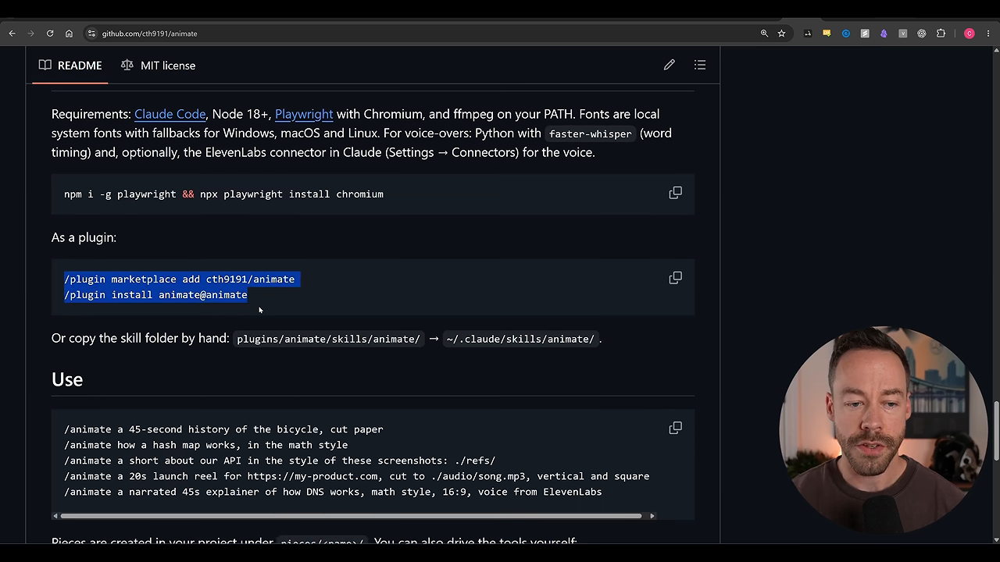
/plugin marketplace add cth9191/animate
/plugin install animate@animate발표자는 이 스킬이 아직 다듬는 중이라고 했어요. 직접 써 보고 개선한 점이 있으면 PR(Pull Request)로 보내 달라고 해요.